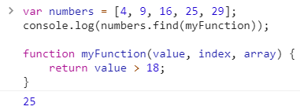

一、array.forEach(function(value, index, array))
var numbers = [45, 4, 9]; numbers.forEach(myFunction); function myFunction(value, index, array) { console.log(value); console.log(index); console.log(array); }
其結果為
說明：
由上例可知 array.forEach() 方法其 argument 是裝著函式，
而函式的 parameters 則有三種可以讓開發者來操作，分別是 value、index、array。
另外 array.forEach() 方法並不回傳值。
二、Array array.map(function(value, index, array))
var numbers = [1, 2, 3]; console.log(numbers.map(myFunction)); function myFunction(value, index, array) { return index * value; }
其結果為
說明：
array.map(function(value, index, array)) 會將陣列裡的每一個元素做處理後，再對映到一陣列的原始索引值裡去。
三、Array array.filter(function(value, index, array))
var numbers = [1, 2, 3]; console.log(numbers.filter(myFunction)); function myFunction(value, index, array) { return value > 1; }
其結果為
說明：
array.filter() 會將陣列裡的每一個元素做判斷，條件成立才會回傳，
最後回傳陣列裡的元素都是條件成立者。
四、int array.reduce(function(total, value, index, array),[inital])
var numbers = [10, 20, 30, 40]; console.log(numbers.reduce(myFunction)); function myFunction(total, value, index, array) { console.log(total, value, index, array); return total + value; }
其結果為
說明：
total 這個參數有兩個意思，一個初始值，二是上一個回傳值，
這個範例是利用 array.reduce() 方法來作一個陣列的加總。
另外，array.reduce() 方法也可外加初始值
var numbers = [10, 20, 30, 40]; console.log(numbers.reduce(myFunction, 100)); function myFunction(total, value, index, array) { console.log(total, value, index, array); return total + value; }
其結果為
五、int array.reduceRight(function(total, value, index, array),[inital])
var numbers = [10, 20, 30, 40]; console.log(numbers.reduceRight(myFunction)); function myFunction(total, value, index, array) { console.log(total, value, index, array); return total + value; }
其結果為
說明：
這用途跟 array.reduce() 方法是一樣的，只差在陣列元素是從右到左佚代，
array.reduceRight() 方法也支援外加初始值。
六、bool array.every(function(value, index, array))
用來判斷陣列裡所有元素是否全都符合條件才回傳為 true。邏輯為 AND。
var numbers = [11, 20, 3]; console.log(numbers.every(myFunction)); function myFunction(value, index, array) { return value > 10; }
其結果為
七、bool array.some(function(value, index, array))
只要陣列裡部份元素符合條件就回傳為 true。邏輯為 OR。
var numbers = [1, 2, 3, 4]; console.log(numbers.some(myFunction)); function myFunction(value, index, array) { return value > 3; }
其結果為
八、int array.indexOf(object item[, int startIndex])
在一陣列裡找尋第一次出現某物件的索引值，回傳 -1 表示找不到。
var person = ["Tom", "Bob", "Mary"]; console.log(person.indexOf("Bob"));
其結果為
也可以從指定位置開始找起
var person = [1, 2, 3, 1, 5]; console.log(person.indexOf(1, 3));
其結果為
九、int array.lastIndexOf(object item[, int startIndex])
在一陣列裡找尋最後一次出現某物件的索引值。
var person = [1, 2, 3, 1, 1]; console.log(person.lastIndexOf(1));
其結果為
十、object array.find(function(value, index, array))
用來找出第一次符合條件的元素。
var numbers = [4, 9, 16, 25, 29]; console.log(numbers.find(myFunction)); function myFunction(value, index, array) { return value > 18; }
其結果為

十一、object array.findIndex(function(value, index, array))
用來找出第一次符合條件元素的索引值。
var numbers = [4, 9, 16, 25, 29]; console.log(numbers.findIndex(myFunction)); function myFunction(value, index, array) { return value > 18; }
其結果為